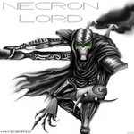

Forums galactiques > Taverne galactique : lieu de discussion informel > IZakaYa - L'alcool encore et toujours...
Pages : 1 2 ... 278 279 280 ... 308 309
| Caleri Nuura Réputation à la taverne : 119  09/03 ETU 19:17 | Score : 0 Détails « Pressé le mec »
Malheureusement, pour que l'homme puisse le rejoindre, il faudrait qu'il passe un examen d'entrée à la JOPP. Il avait préféré ne rien lui dire, après tout rester cloîtré dans une école ne serait pas forcément ce qu'il y aurait de mieux pour lui. | ||
| Jack Réputation à la taverne : 64 09/03 ETU 19:38 | Score : 5 Détails Jack prena "FUCK",et l'emmena dehors sur une grande plaine:
Tu vois ces grandes plaines? Oh oui bien sur, He bein ce sont les boulets qui ont été tuer, Whha y'en a beaucoup. J'ai commencer à creser ton trou Mais pourquoi?... | ||
| Jack Réputation à la taverne : 64 10/03 ETU 11:21 | Score : 0 Détails Toi pour ton anniversaire,achète toi une pierre tombale personne ne voudrat le faire a ta place.
Tu vois mon petit,tu ne vaut pas la corde pour que l'on te pende. Et si je balance des ondes néfaste,ce n'est pas grave et de toute façon pour toi,c'est du luxe.Et puis c'est que tu te tire d'ici? De plus,tu ose prendre l'avatar à guilaume Tell | ||
| Wensicia Corrino Réputation à la taverne : 1642  10/03 ETU 11:30 | Score : 5 Détails "s'enrayer", patate ...
| ||
| Groochie Réputation à la taverne : 709  10/03 ETU 12:37 | Score : 1 Détails Groochie qui venait d’entrer dit à Araskel:
"Un concentré d'intelligence pour FUCK, il en a bien besoin." Puis il se tourna vers fuck: "Tu est dieu?? Je crois que sa ne va pas plaire au très haut, surtout venant d'un flamus niark." | ||
| NiCo Réputation à la taverne : 9  10/03 ETU 12:49 | Score : 2 Détails attendez... il n'a pas dit dieu de quoi :))).... dieu de la conner..... bétise ( pour rester poli )
| ||
| Caleri Nuura Réputation à la taverne : 119 10/03 ETU 14:41 | Score : 1 Détails Sus à l'ennemi!
Hachons le!!!! | ||
| NiCo Réputation à la taverne : 9 10/03 ETU 18:08 | Score : 0 Détails Nico pris son pistole Hyper~Atomique et tira juste sur le derriere de son pantalon ce qui fit un gros trout
~ Oups... on à vu ton caleçon plein de petit coeur :)))) | ||
| Caleri Nuura Réputation à la taverne : 119 12/03 ETU 10:43 | Score : 0 Détails Caleri entra à l'Iza, personne, encore une fois.
« C'est mort. » Depuis quelques temps Caleri se sentait seul ici, plus de visites de Galac, ni de personne d'autre. On aurait dit que tout le monde s'endort. « N'a plus qu'a se mettre devant sa console de jeux et ne rien faire... » | ||
| lara Réputation à la taverne : 87 12/03 ETU 11:48 | Score : 1 Détails mais si je suis là!!!!
une invitation ne se refuse pas! | ||
| Caleri Nuura Réputation à la taverne : 119 12/03 ETU 12:01 | Score : 1 Détails Caleri vit Lara entrer à l'Iza, immédiatement il eut le réflexe de poser son verre de bière, de se lever et d'accompagner la dame jusqu'à un fauteuil.
« Bonjour madame, Vous voulez que je vous commande un apéritif, ou bien vous désirez simplement discuter. » Caleri passa sa main (pas besoin de savoir laquelle bande de curieux) dans les cheveux bleus et soyeux de Lara. Ils semblaient glisser sous sa main, doux et résistants comme la soie. « J'adore vos cheveux, ils sont si lisses et doux. Un véritable plaisir que de jouer avec eux. » | ||
| lara Réputation à la taverne : 87 13/03 ETU 11:55 | Score : 3 Détails LARA s'assit! le fauteuil était trés confortable! un apérétif? dit elle......euh... non merci je ne bois pas!!! Lara comptait parler affaires lorsque la main du commandant commança à lui froler sa longue chevelure bleu! Lara se senti désarmé, presque fiancée a un autre elle ne s'avait pas comment réagir, jeune et sans expèrience elle n'avait pas prevu que la rencontre prendrait une telle tournure!
Lara se leva de son siège! Monsieur dit elle vous dépassez les bornes! je ne vous permet pas autant de familiarité! vous etes incorrect... sur ce celle ci sans attendre parti en coup de vent! laissant le soin au commandant de payer l'addition la seule affaire vraiment traitée lors de ce fameux rdv | ||
| roomi Réputation à la taverne : 158 13/03 ETU 13:17 | Score : 2 Détails Wouah le vent.../mdr
| ||
| Wilhelm Gottfried Réputation à la taverne : 5 13/03 ETU 19:52 | Score : -1 Détails Un commandant chauve, la peau grisâtre, un légèr sourire hautain aux lèvres entra dans le bar. Il était vêtu d'un uniforme lourd. Voyant la scène, il ne put réprimer un sourire méprisant.
Un verre de vodka pour moi. Vous allez bien, Nuura? | ||
| Mac Namarra Réputation à la taverne : 0  14/03 ETU 15:01 | Score : 0 Détails Un grand homme entra dans la taverne et dit au serveur:
-un mélange de tout vos alcool fort s'il vous plaît . | ||
| roomi Réputation à la taverne : 158 14/03 ETU 16:09 | Score : 1 Détails Roomi,deboula dans l'izakaya et se prensenta rapidement à caleri...qui depuis deux jours tirait une drole de tete.
Il s'ennuyait grandement. "Excuser moi celari,lara m'a semblée un peu choquée l'autre soir en me parlant de sa journée et de sa visite ici. Ne lui en voulez pas pour sa réaction,elle est trés fragile en ce moment. Nous partons en vacances tous les deux sur la planète Venice ,nous avons besoins de repos." Roomi,fier de lara,évidement ne put s'empécher de dire pour finir en souriant jusqu'e aux oreilles: Si vous saviez mon bohneur,je viens d'acquerir un engins tous terrains...la puissance d'une routiere,concentrée pour faire du hors piste" Il sortit une photo de lara(vous n'en saurez pas plus) "Vous avez vu ct'engin!!!!!!!! Il chauffe rapidement en plus,seulement 20 minutes,ensuite on peut en faire à peu prés tout ce qu'on veut..." Tout était faux,ce n'était qu'un montage sur la photo,et roomi fabulait. Il respecte trop lara pour se moquer d'elle ainsi,mais c'était pour déjouer l'ennuie visible de caleri...dont roomi avait été informé par les blattes... Il but une limo. et en partant laissa tomber un petit message prés d'un homme chauve. "ne vous inquiétez pas,c'est juste une petite mise en conditions..." | ||
| Rilrae-Rilroa Réputation à la taverne : -8 14/03 ETU 17:18 | Score : 0 Détails Rilrae entra dans la taverne ,il y avait peu de monde donc peu de chance de trouver quelquonque alliance,sa soeur Rilroa entendit tout de même les rires rauques propre a certain alcooliste.
| ||
| king size Réputation à la taverne : 149  14/03 ETU 17:31 | Score : 0 Détails King size entra a son tour dans la taverne,surprise par tout se broua,elle s'approcha alors de Rilrae-Rilroa et leurs chuchottas
N'entendez vous pas que ses rires,sont ce de personnes heureuse et non pas alcoolisé. King size apres avoir pris une bouffée de bonheur due a tous ses rires,rebroussa chemin et se promis d'y revenir un peu plus souvent. | ||
| Rilrae-Rilroa Réputation à la taverne : -8 14/03 ETU 17:36 | Score : 0 Détails Wouah le vent.../mdr
Un commandant chauve, la peau grisâtre, un légèr sourire hautain aux lèvres entra dans le bar. Il était vêtu d'un uniforme lourd. Voyant la scène, il ne put réprimer un sourire méprisant. Des personne heureuse dites-vous? | ||
| Romain Réputation à la taverne : -7 14/03 ETU 17:39 | Score : 0 Détails Une sorte de gros reptile entra dans le bar, bouscula un peu les tables...
UN GROSSE CHOPE DE BIèRE SIOUPLAIT !!! |
Pages : 1 2 ... 278 279 280 ... 308 309
Forums galactiques > Taverne galactique : lieu de discussion informel > IZakaYa - L'alcool encore et toujours...